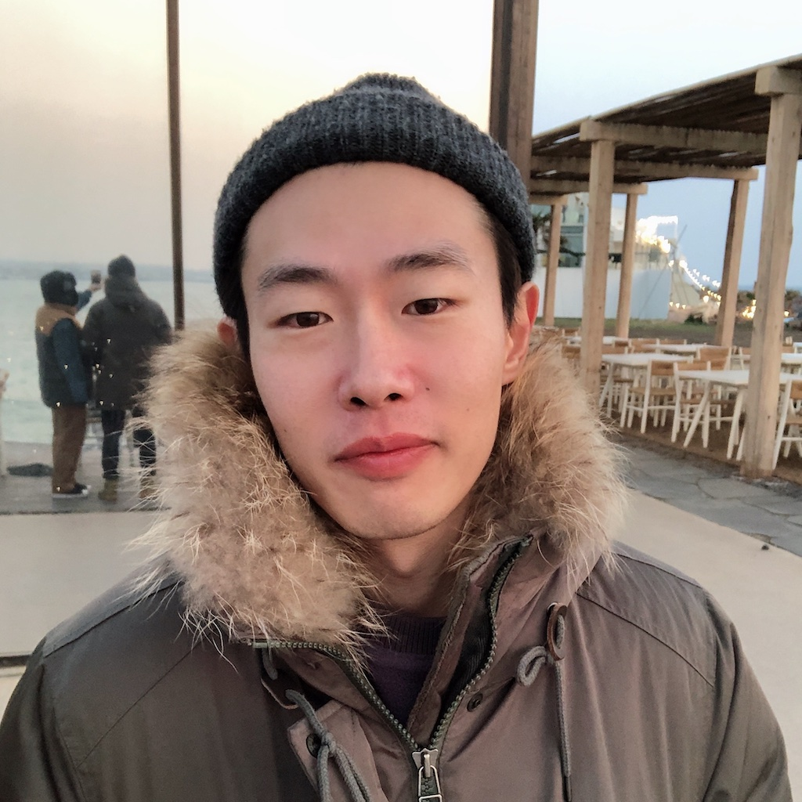

Staff Engineer at Samsung Research with a Ph.D. in Computer Science from KAIST. My work focuses on wireless sensing, indoor localization, sensor fusion, network intelligence, and AI-driven optimization. I build research-backed systems that bridge novel positioning algorithms with reliable large-scale deployment.
Led research and development of indoor localization systems using geomagnetic signals, Wi-Fi, and conventional machine learning approaches.
Dongsoo Han (Chair), Giwan Yoon, Geehyuk Lee, Junekoo Rhee, Hojin Choi
Developed a high-precision indoor positioning methodology based on geomagnetic anomalies, enabling orientation-invariant localization in complex indoor environments.
Studied WLAN-based indoor localization and improved positioning robustness through signal imputation and spatial prediction.
Built a robust lane detection system by combining Hough Transform methods with road area clustering.
Authors: Sangjae Lee, Seungwoo Chae, Dongsoo Han
Authors: Sangjae Lee, et al.
Authors: Suk-hoon Jung, Sangjae Lee, Dongsoo Han
Developed a high-precision indoor localization method using geomagnetic anomalies and published the core results in IEEE Access.
Proposed sensor fusion frameworks that integrate Wi-Fi, SLAM, and onboard sensors for resilient indoor positioning in real-world environments.
Designed scalable systems for crowdsourced radio map construction and automated data collection to support large-scale indoor positioning services.
Applied localization and sensing technologies to connectivity optimization and tracking systems deployed in production-oriented environments.
Python, Java, C/C++, JavaScript
ML/AI modeling, sensor fusion, data processing
Wireless sensing, localization, network optimization